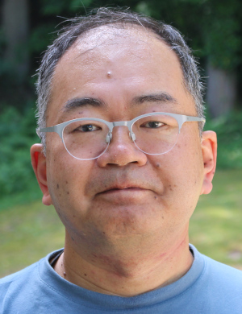

Professor Masaki Oshikawa
Ohio Eminent Scholar in Condensed Matter Theory and Professor
Department of Physics, the Ohio State University

Publications: Masaki Oshikawa on Google Scholar
Other information: Masaki Oshikawa (Researchmap)
Education
| March 1990 | B.Sc., Department of Physics, Faculty of Science, University of Tokyo |
| April 1990 | Entered Master's Program, Department of Physics, Graduate School of Science, University of Tokyo
(Izuyama Group, Department of Physics, College of Arts and Sciences) |
| March 1992 | Completed Master's Program |
| April 1992 | Entered Doctoral Program (withdrew in March 1994) (Kohmoto Group, Institute for Solid State Physics, University of Tokyo) |
| December 1995 | Ph.D. (Science), University of Tokyo |
Professional Experience
| April 1992– | JSPS Research Fellow (DC1) |
| April 1994– | Research Associate Nagaosa Group, Department of Applied Physics, University of Tokyo |
| November 1995– | Killam Post-Doctoral Fellow Affleck Group, Department of Physics and Astronomy, University of British Columbia |
| February 1998– | Associate Professor Department of Physics, Tokyo Institute of Technology (After reorganization in April 1998: Graduate School of Science and Engineering, Tokyo Institute of Technology) |
| April 2006– | Professor Institute for Solid State Physics, University of Tokyo |
| September 2016–present | Visiting Senior Scientist (concurrent position) Kavli Institute for the Physics and Mathematics of the Universe (Kavli IPMU) |
| April 2026-present | Senior Fellow (concurrent position) Institute for Solid State Physics, University of Tokyo |
| April 2026-present | Ohio Eminent Scholar in Condensed Matter Theory and Professor Department of Physics, the Ohio State University |
Awards and Honors
- The 7th Ryogo Kubo Memorial Award (September 2003, Inoue Foundation for Science)
- SEST Award for Young Scientist (October 2005, Society of Electron Spin Science and Technology, Japan)
- JSPS Prize (March 2008, Japan Society for the Promotion of Science)
- Fellow of the American Physical Society (September 2019)
- Award for Science and Technology (Research Category), Commendation for Science and Technology by the Minister of Education, Culture, Sports, Science and Technology (April 2022)
- 2025 (the 71st) Nishina Memorial Prize (awarded jointly with Hal Tasaki)